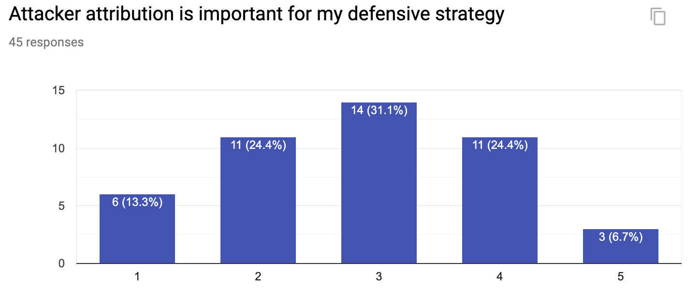
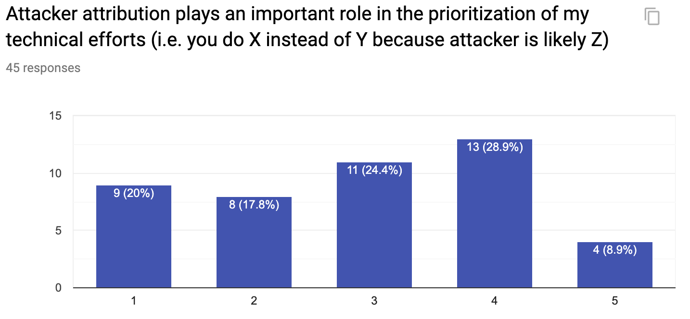
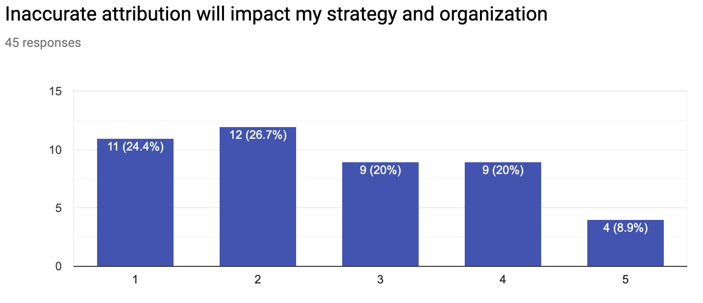
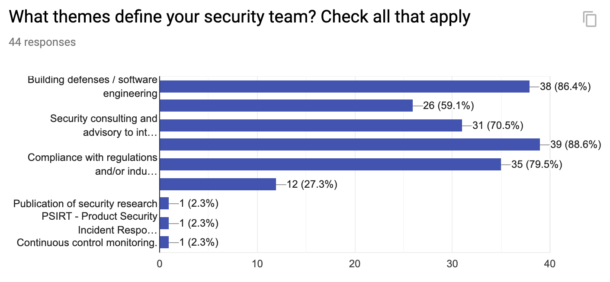
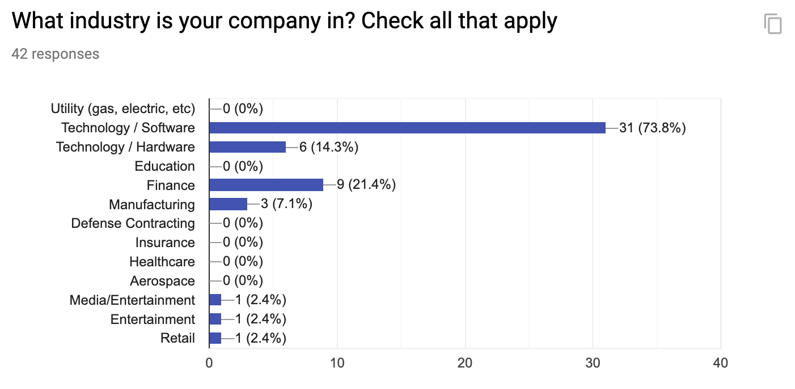

Root Cause
The Value of Attacker Attribution
November 2nd, 2019
Chris Rohlf
Attacker attribution is a hotly debated topic in cyber security. Does it actually help your defensive efforts to know precisely who the actors behind an attack are? Most professionals would agree that knowing who was behind an attack is a prerequisite to successful criminal investigations. But a large part of the security industry is dedicated to tracking actors that are usually beyond the reach of law enforcement. I wanted to know how valuable precise attribution is to other security leaders and how it informs their defensive strategies. I decided a poll was the best way to collect that data. I received 45 responses from CISO's and other people in security leadership roles.
First a few disclaimers: Most polls are biased in some way. I shared the question form with my personal network of CISO's and other security leadership and asked them to privately share it with their own network. My network tends to be those working in technology and finance companies. A companies business model, its 'corporate culture', and how it operates, will heavily influence how it solves its security problems. A west coast tech company and a European manfuacturing company may approach the problem in very different ways. So please keep this in mind when consuming this data.
I've chosen to not write up my personal opinions on this topic in this post and instead focus on analyzing the data that was submitted. That being said I can only analyze the data through the lens of my own experiences. Only when we try to separate our identities from the work and start following the data will we start to make progress on these issues. Hopefully this helps you inform your own opinions and improve the defensive strategy your within your own organization. The only data collected that I am choosing not to publish are the raw comments. This is because in some cases they are, somewhat ironically, attributable to specific people and companies. I've used them to form the analysis below. The first 3 questions asked for a response on a linear scale from 'Strong Disagree' (1) to 'Strong Agree' (5). The remaining questions were multiple choice.
The first question I asked was how important attacker attribution was to their defensive strategy.

Most respondents trended towards the middle of the scale landing in what we can interpret as 'somewhat important' with a slightly higher response count on the 'Strong Disagree' side of the scale. The optional comments shed some additional light on these answers. One respondent said it was a '2' for nation state style APT but a '5' for unsophisticated actors they were tracking. This person also selected that they use a vendor to source threat intelligence from. This makes some sense if you consider that most vendors tracking threat actors are only able to provide ahead of time information on unsophisticated criminal enterprises, and almost always after the fact for nation state actors. Nation state backed APT groups aren't exactly hanging out in dark web forums discussing their tactics. They do of course reuse toolchains and techniques so studying known attacks from them certainly has value.

The next question was aimed at understanding how prioritization of resources is affected by attribution information. What I wanted to understand with this question is how much technical efforts change based on whether attacker A or attacker B is targeting a company. After all there is only one set of vulnerabilities (yours) for them to exploit, so does it really matter who is behind the exploit? Exploitation techniques, including post-compromise, are where these actors will begin to diverge in terms of both sophistication and stealth etc. This means attribution may change your detection priorities but not necessarily your efforts to eliminate vulnerabilities and attack surface. Those respondents in product security roles who are responsible for shipping secure code echoed this in their comments.

The next question was primarily inspired by news around inaccurate attribution as it related to 4th party collection. I would have expected most answers here to line up with answers to the previous question around prioritization. In the previous question 28 respondents selected 3, 4, or 5. But here the answers have shifted left. If inaccurate attribution is not important then why place such emphasis on attribution in priortization of technical efforts? It's possible that these teams are building in the assumption that they won't or can't know who their attacker is, which a very sane strategy to have. One respondent commented something very aligned with this type of thinking. Its only in recent years that we have seen attribution to specific nation states from the United States and its intelligence partners. Before this we were left to speculate or rely on the analysis of threat intelligence vendors who may have been missing pieces of the puzzle.



These questions above were multiple choice and meant to give us a better understanding of the types of organizations answering these questions, where they get attribution information from, and the general themes that define their organizations.
The final question was a free form text response asking the respondent if they had any final thoughts to share on attribution. These comments were enlightening and reflected the answers to the first, and most important, question. Some people favored attacker categorization and/or groupings by technical capabilities with precise attribution as a 'nice to have'. In general I did find that many comments placed more value on the 'what/how' behind attacks and less on the 'who', even if they had answered a 4 or 5 for the first question. I asked a few individuals in these roles "If you only knew the how but never the who would you still have confidence in your strategy?". The answer was mostly 'yes' with the exception of those in organizations with political sensitivities to the 'who'. This seems like common sense as not every security leader is in the position to ignore geopolitical events that their respective organizations can easily get caught in the middle of.
It's hard to draw any actionable conclusions from a poll like this. Different companies face different security problems and will place more or less emphasis on attribution depending on how much they think it helps them solve those problems. More data always leads to more informed decisions. Hopefully the data starts a constructive conversation in your team.